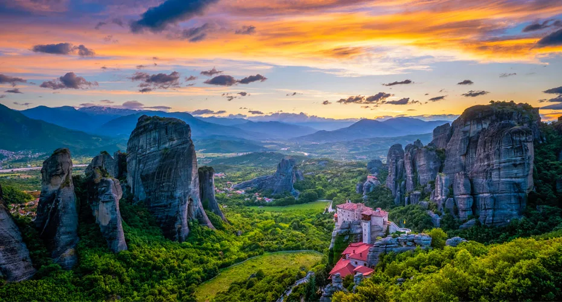

Meteora
Key Highlights of Meteora

Meteora
Key Highlights of Meteora
Rock Formations
The name "Meteora" translates to "suspended in the air" or "in the heavens above," reflecting the area's dramatic vertical cliffs and monolithic pillars that rise sharply from the valley floor. The unique geological formations were created millions of years ago through a combination of sedimentary processes and tectonic activity.
Monasteries
Meteora is home to six active Eastern Orthodox monasteries, part of what was once a much larger network of 24. These were established starting in the 14th century by hermits and monks seeking isolation and spiritual peace. The monasteries are: Great Meteoron (the largest and oldest), Varlaam, Rousanou, St. Nicholas Anapausas, St. Stephen, Holy Trinity (featured in the James Bond movie For Your Eyes Only)Visitors can climb to these monasteries, many of which feature frescoes, manuscripts, and stunning views.

Cultural and Natural Importance
Meteora is a UNESCO World Heritage Site, recognized for both its natural beauty and its cultural significance. The site is an important center of Orthodox spirituality, with the monasteries continuing to function as places of worship and contemplation.
Activities
Hiking: Numerous trails wind through the area, offering close encounters with the rocks and access to spectacular viewpoints.
Rock Climbing: The towering pillars attract climbers from all over the world.
Photography: The blend of natural and architectural beauty provides endless opportunities for stunning photographs.


Meteora The Linkin Park Album
My favorite band Linkin Park released an album in 2003 and the gravity defying nature of it inspired them so much they named it after meteora.